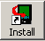

You download Noah Pro as one ZIP file (noah_pro2.zip). First this file needs to be unzipped using one of the many available programs (e.g., WinZip for Windows, ZipIt for Macintosh). This page explains unzipping in more detail.
Note for Mac users: please read a note in this document to make sure that you have correct settings in your unzipping program.
Note: it's advised to first uninstall previous versions of Noah Pro, Noah Pro demo or Noah Lite. This page explains how.
Noah Pro comes in one ZIP file that contains:
Press the install button on the left side of Palm Desktop application (  )
On the windows that appears, press "Add..." button, then navigate to the folder where you unpacked Noah. Select both "noah_pro" and "wn_medium.pdb" (to select multiple files press SHIFT key, click with left mouse button on file names, release SHIFT key). Press "Open" button in the file dialog.
Press "Done" button.
You'll see the final confirmation, press "OK" button.

Noah will get installed during next Hot Sync operation (by pressing Hot Sync button on the cradle)
Note for advanced users: Noah Pro offers many databases with different memory/size trade-offs (bigger databases have more words but require more memory). You can read about all databases available for Noah Pro in database comparison

|
Starting up. At startup Noah Pro shows About screen. |
| Finding word definition. To find a word you can either press the spyglass icon or just start typing a word (using either Graffit or on-screen keyboard). You can browse the list of words by continuing to enter the word (the list will automatically scroll to the nearest matching word) or you can use the up/down arrows. Pressing Cancel button will take you back to the previous screen. To see a definition of a word either tap on it in the list or press "return" (in graffiti it's a move from upper right to lower left) to select the currently highlighted word. This will take you to the definition screen. |
|
Scrolling definition.
If a definition doesn't fit in one screen you can scroll it using
hardware up/down buttons, by tapping on the screen (tapping on the
upper part scrolls up, on the lower part scrolls down) or by using
scrollbars. You can either scroll by line, half a page or the whole
page. You can change that using preferences. You can move to next/previous word by using left/right arrows. |
| Copying definition to a clipboard. You can copy the definition of a word to a clipbard, switch to other program and paste it there. To do it press the menu button (button in the lower, left corner of the graffiti area), select "Copy to clipboard" menu item. Switch to some other program and use its "Paste" menu item (in this example the program is standard MemoPad). | |||

|
Accessing history of selected words. Noah keeps the history of last 5 accessed words. You can access it by pressing icon in the lower, right corner, next to spyglass icon. |

|
Changing preferences. You can go to preferences screen by choosing menu item "Preferences". For both hardware buttons and tap scroll you can set whether you want to scroll by line, half a page, page or don't scroll at all. |